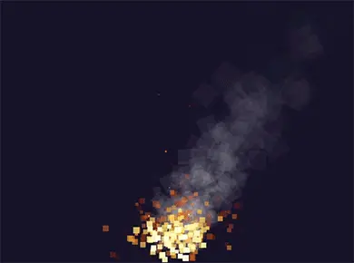

Gnist is a lightweight, easy-to-use 2D particle simulation engine written in vanilla JavaScript with zero dependencies.
Built for real-time visual effects rather than physically accurate simulation, it uses a simplified kinematic model that prioritizes performance. Forces directly influence particle velocity, bypassing mass and momentum calculations.
Gnist is renderer-agnostic. It decouples simulation from timing and rendering, exposing raw state data that can be rendered with Canvas 2D, WebGL, or any custom JavaScript runtime.
While running the simulation on the GPU could improve raw performance, it would also significantly increase API complexity. Gnist instead performs simulation on the CPU, prioritizing a simple and intuitive programming model. The engine is designed around an object-oriented, configuration-driven API, while keeping rendering separate from simulation. For custom rendering pipelines, particle data can still be exported as flat typed arrays for efficient GPU-based rendering.
Architecture Concepts
The simulation pipeline revolves around four primary building blocks.
The Engine
The central simulation manager. It owns the shared particle pool, updates particle lifecycles, applies forces and modifiers, and advances the simulation frame by frame using a time delta (dt).
Emitters
Particle generators that spawn particles into the particle pool. Emitters are defined by 2D primitives such as points, lines, rectangles, and ellipses, which determine where particles are born. Configurations and blueprints provide fine-grained control over emission behavior and initial particle properties, with randomized ranges available to create natural variation.
Forces
Environmental influences that directly modify particle velocity over time. Forces can be global, affecting every particle in the simulation (such as gravity or wind) or scoped to particles emitted by a specific emitter.
Modifiers
Rules that update particle properties over their lifetime based on their normalized age.
Path Modifiers alter particle trajectories independently of environmental forces.
Visual Modifiers alter visual properties such as scale, opacity, and color over a particle's lifetime.
Note
Gnist is designed around composing its provided building blocks rather than extending the engine itself. Internal implementation details are not intended as extension points.
Your First Particle System
What You'll Create
In this guide, you will build a simple campfire particle effect using Gnist from scratch. The example uses multiple emitters, modifiers, a global force, and Canvas 2D rendering to demonstrate how the different parts of Gnist work together. The focus is on learning how to use Gnist, not on building a production-ready application.
The final result will look like this:

Prerequisites
Before getting started, make sure your development environment meets the following requirements:
When prompted, set the package type to module. CommonJS projects are not supported.
Note that this project does not use the entry point setting. You can leave it unchanged or remove it entirely.
Install Vite
Next, we will install Vite as a dev dependency to provide a development server and handle module resolution for the project. This allows us to import directly from the installed npm package. Vite is used only to simplify the development setup; it is not a requirement for using Gnist.
npmi--save-devvite
Then add the start script to package.json:
{"scripts":{"dev":"vite"}}
Install Gnist
Install Gnist as a dependency using npm:
npmi@gergelybardos/gnist
Creating the Application Skeleton
HTML Setup
Create an index.html file in the project root. The page only needs a <canvas> element, which will be used for rendering the particle system, and a <script> tag that loads the application's entry point.
Next, create the application's main loop. Each frame, it advances the simulation and renders the updated particle state.
dt represents the time elapsed since the previous frame, measured in seconds. We will pass it to Gnist, ensuring that the simulation runs at a consistent speed regardless of the frame rate.
Next, create a Gnist instance and configure its culling bounds. Culling bounds specify the area outside of which particles are automatically removed regardless of their age. Setting culling bounds is optional but recommended for most applications. Since Gnist is renderer-agnostic and has no knowledge of the rendering context, the application may define these bounds if automatic particle cleanup is desired.
Gnist does not render particles directly. Instead, it exposes the current simulation state through the engine.particles array, which can be rendered using any rendering system. In this example, we use the Canvas 2D API to draw each particle as a small colored rectangle. It is up to the application to interpret the particle data; the same state can be used to create simple shapes, sprites, textures, or custom visual effects. The rendering code in this example is intentionally simple.
To verify that everything is working correctly, run the following:
npmrundev
Emitters
Emitters are the particle generators of the simulation. Each emitter type is defined by its geometric shape, which determines its emitting area and where newly emitted particles initially appear.
Creating Emitters
To add an emitter to the simulation, you need to instantiate one of the emitter classes, configure it via its constructor, register modifiers and scoped forces with the emitter, and then register the emitter itself with the main Gnist class. Upon instantiating, the emitter is automatically assigned a unique id value if one is not specified.
Configuration
Emitters are configured by a single configuration object passed at instantiation. While most emitter types have their own specialized parameters, they all share a set of core configuration options. Many of the corresponding emitter instance properties are public and can be dynamically updated in real-time within your update loop, while others remain static or are accessed through dedicated API methods.
The common properties of an emitter configuration object and their corresponding emitter instance public properties:
Configuration Property
Type
Default
Instance Property
Description
id
string
Auto-generated UUID
readonly
A unique identifier for the emitter.
enabled
boolean
true
readonly
Whether the emitter is currently active.
particlesPerSecond
number
100
✔
The number of particles to emit per second.
duration
number
Infinity
-
The duration of the emitter's emission in seconds, or Infinity for infinite emission.
x
number
0
✔
The horizontal coordinate of the emitter origin.
y
number
0
✔
The vertical coordinate of the emitter origin.
emissionSource
EmissionSource
EmissionSource.VOLUME
✔
The emission source mode of particles within the emitter's geometry.
particleBlueprint
object
{}
-
The blueprint used to define the initial properties of emitted particles.
The emissionSource property
The emissionSource property of the configuration object is used to control the geometric distribution and default direction of the emission. The latter depends on both the emitter's shape and the source mode and can be overridden by specifying particleBlueprint.direction.
The available modes are properties of the EmissionSource constant object:
EDGE_OUT — Emit from the shape's boundary, directing particles outward.
EDGE_IN — Emit from the shape's boundary, directing particles inward.
EDGE_BOTH — Emit from the shape's boundary, directing particles randomly inward or outward.
VOLUME — Emit uniformly from the shape's entire area.
How each of these modes behaves on different emitter types is explained in the Emission Modes section.
Particle Blueprint
The particleBlueprint property holds a simple object used by emitters to initialize particles at emission. This is not the runtime particle state. Apart from color, values can be specified either as a single value or as a [min, max] range array.
Properties of the particleBlueprint sub-object:
Property
Type
Default
Description
rotation
number
0
Orientation angle (in radians).
angularVelocity
number
0
Angular rotation speed (in radians per second).
size
number
1
The visual size or scale factor. Interpreted by the renderer as pixels, radius, or a transform scale.
color
object
{ r: 255, g: 255, b: 255 }
The particle color, defined by individual RGB channels.
opacity
number
1
The visual opacity, from 0.0 (fully transparent) to 1.0 (fully opaque).
lifespan
number
1
The maximum allowed lifespan (in seconds).
speed
number
1
Speed (in pixels per second), used to derive the particle's initial horizontal and vertical velocity.
direction
number
0
Movement direction angle (in radians), used to derive the particle's initial horizontal and vertical velocity.
Note
Note that these do not map one-to-one to the public or readonly properties of Particle instances. For example, speed and direction are not stored directly; they are used to initialize the particle's vx and vy properties.
Example
The example below demonstrates the core configuration options shared by all emitter types (the PointEmitter used here is the only type without any specialized properties of its own).
While Gnist supports both global and emitter-local forces, modifiers are strictly emitter-scoped. You can still register the same modifier instance with multiple emitters, but there is no concept of a "global modifier". This is because forces contribute to a particle's velocity additively, allowing multiple forces to be combined predictably. Modifiers, on the other hand, overwrite particle properties directly, so allowing both global and emitter-scoped modifiers would introduce conflicts and unpredictable results.
Applying Modifiers
To apply a modifier, first you need to create an instance of it. Upon instantiating, the modifier is automatically assigned a unique id value if one is not specified. Modifiers are not applied to particles directly; instead, you register them with an emitter using the emitter's addModifier() method passing the modifier instance as an argument. You may register any number of modifiers with an emitter. Once registered, Gnist automatically applies the modifier to all particles emitted by that emitter.
Modifiers cannot be toggled after registration; they can only be removed from the emitter using the emitter's removeModifier() method passing the modifier's id as an argument.
Note
Removing a modifier only affects particles emitted after the removal. Particles that were already emitted retain the effect of the modifier that was applied to them before removal.
To apply a scoped force, first you need to create an instance of it. Upon instantiating, the force is automatically assigned a unique id value if one is not specified. Forces tied to a given emitter must first be registered using the emitter's addScopedForce() method passing the force instance as an argument. You may register any number of scoped forces with an emitter. Every particle emitted by that emitter is automatically affected by its registered scoped forces.
Scoped forces cannot be toggled after registration; they can only be removed from the emitter using the emitter's removeScopedForce() method passing the force's id as an argument.
Note
Removing a scoped force only affects particles emitted after the removal. Particles that were already emitted retain the effect of the force that was applied to them before removal.
Global forces are applied to every particle in the simulation, regardless of which emitter emitted it. To apply a global force, first you need to create an instance of it. Upon instantiating, the force is automatically assigned a unique id value if one is not specified. Global forces must be registered with the main Gnist class using its addGlobalForce() method passing the force instance as an argument. You may register any number of global forces.
Global forces cannot be toggled after registration; they can only be removed from the simulation using the removeGlobalForce() method of the main Gnist class passing the force's id as an argument.
Note
In contrast to modifiers and scoped forces, removing a global force affects every particle in the simulation, including particles that were already emitted before the removal. Existing particles retain the velocity accumulated from the force up to that point; they simply no longer receive further acceleration from the removed force.
Registering and Removing Emitters
Emitters must be registered with the main Gnist class using its addEmitter() method passing the emitter instance as an argument. Once registered, the next time Gnist.update() is called in your main loop, the new emitter will start emitting particles.
Emitters have Playback Controls, but they can also be removed from the simulation using the removeEmitter() of the main Gnist class passing the emitter's id as an argument. Particles already emitted by the removed emitter will complete their lifetimes, but no new particles will be emitted.
Playback Controls
You can control emitter playback using the following methods, regardless of whether the emitter has a finite or infinite duration:
Method
Description
.start()
Starts or forcefully restarts particle emission from the beginning. Resets internal tracking and sets the emitter to an active state.
.pause()
Temporarily halts particle emission and locks internal tracking.
.resume()
Resumes particle emission and internal tracking from where they were paused.
.stop()
Halts particle emission and resets internal tracking. The emitter is deactivated but remains ready to be started again.
To check whether an emitter is currently enabled, you can query its enabled property. However, this is a native getter, and the value cannot be directly modified on the instance.
The emissionSource property of an emitter configuration object determines where particles originate within the emitter's shape and what their default direction is. The table below illustrates how each source mode behaves for the different emitter types. Note that PointEmitter is not included, as the source property has no effect on it.
EDGE_OUT
EDGE_IN
EDGE_BOTH
VOLUME
N/A
Directed Emission
The particleBlueprint.direction property of an emitter configuration object overrides the default emission direction determined by the emitter type (shape) and the selected emission source mode.
Note that direction can be specified either as a single value or as a [min, max] range, allowing particles to be emitted in a range of directions rather than a single one. This can produce less uniform and more natural-looking movement. Below are some examples that illustrate the difference.
A PointEmitter with different direction range settings.
No explicit direction
[0, Math.PI * 0.5]
[0, Math.PI * 2]
A LineEmitter using a single-value and a range-value direction.
Math.PI
[0, Math.PI * 2]
A RectEmitter using a single-value and a range-value direction.
Math.PI * 0.3
[0, Math.PI * 2]
Forces
Directional Force
A DirectionalForce applies a constant directional acceleration to affected particles. Unlike an initial velocity, which is only set when a particle spawns, a directional force continuously modifies a particle's velocity over time.
Typical use cases: gravity, wind, and buoyancy.
Properties of a configuration object and its corresponding DirectionalForce instance public properties:
Property
Type
Default
Description
ax
number
0
Horizontal acceleration component (pixels per second²). Positive values accelerate particles to the right, negative values to the left.
A LinearDrag gradually reduces a particle's velocity over time,
simulating friction or resistance. Unlike a directional force, which adds acceleration
in a specific direction, linear drag opposes the particle's current movement and slows it down.
Typical use cases: air resistance, friction, smoke, and fire damping.
Properties of a configuration object and its corresponding LinearDrag instance public properties:
Property
Type
Default
Description
drag
number
0.99
Friction coefficient where 0 means no drag and higher values slow particles down faster.
The example below demonstrates the effect of linear drag by comparing particles with drag enabled against particles without drag.
A RadialForce applies acceleration toward or away from a central point. The magnitude of the acceleration decreases as the distance from the center increases.
Typical use cases: explosion, particle attraction and repulsion effects.
Properties of a configuration object and its corresponding RadialForce instance public properties:
Property
Type
Default
Description
x
number
0
Horizontal coordinate of the force center.
y
number
0
Vertical coordinate of the force center.
strength
number
50000
Magnitude of the force. Positive values create attraction, negative values create repulsion.
epsilon
number
10
Smoothing factor that prevents extreme acceleration values when particles are close to the force center. Only the squared epsilon is stored internally and exposed as epsilonSquared.
cullingRadius
number
0
Distance from the force center below which particles are removed. A soft-aging buffer zone is applied around this area to reduce visual popping. Set to 0 to disable culling. Only the squared radius is stored internally and exposed as cullingRadiusSquared.
Note
Because the simulation is updated in discrete time steps, particles may overshoot the force center and continue on the opposite side before being pulled back. If particles should disappear upon reaching the center, use the cullingRadius property.
Below is an example of a radial force with and without culling. While some particles escape, most are absorbed. Without culling, however, particles continue orbiting the force until they reach the end of their lifespan. The only difference between the two examples is whether cullingRadius is set.
A Vortex applies a combination of inward suction and tangential rotation to create a swirling motion around a central point. The suction component pulls particles toward the center, while the rotational component causes them to orbit around it.
Typical use cases: whirlpool, tornado, black hole, and portal.
Properties of a configuration object and its corresponding Vortex instance public properties:
Property
Type
Default
Description
x
number
0
Horizontal coordinate of the vortex center.
y
number
0
Vertical coordinate of the vortex center.
rotationSpeed
number
100
Strength of the rotational force. Positive values rotate clockwise, negative values rotate counter-clockwise.
suctionSpeed
number
50
Strength of the radial attraction/repulsion. Positive values pull inward, negative values push outward.
radius
number
Infinity
Radius of influence. Particles outside this distance are unaffected.
cullingRadius
number
0
Distance from the vortex center below which particles are removed. A soft-aging buffer zone is applied around this area to reduce visual popping. Set to 0 to disable culling. Stored internally and exposed as epsilon and as a squared value as epsilonSquared.
Note
Because the simulation is updated in discrete time steps, particles may overshoot the vortex center and continue on the opposite side before being pulled back. If particles should disappear upon reaching the center, use the cullingRadius property.
Below is an example of a vortex with culling. While some particles escape, most are absorbed. Without culling, particles would continue orbiting the force until they reach the end of their lifespan.
A SineWave applies a perpendicular sine-wave displacement relative to the particle's current movement direction. The modifier can be configured with either fixed or interpolatedamplitude and frequency over the lifespan of the particles.
Typical use cases: smoke trail, energy beam, magic effects, floating particles, and organic movement patterns.
Properties of a configuration object and its corresponding SineWave instance public properties:
Property
Type
Default
Description
amplitude
number | number[]
10
Wave amplitude (in pixels), or a [start, end] range array interpolated over particle lifespan. Within a SineWave instance, amplitude is stored and exposed as startAmplitude and endAmplitude.
frequency
number | number[]
2
Cycles per second (Hz), or a [start, end] range array interpolated over particle lifespan. Within a SineWave instance, frequency is stored and exposed as startFrequency and endFrequency.
A Turbulence applies pseudo-random, continuous displacement to particles over their lifespan. The modifier can be configured with either fixed or interpolatedstrength over the lifespan of the particles.
Typical use cases: smoke, fire, cloud, and wind.
Properties of a configuration object and its corresponding Turbulence instance public properties:
Property
Type
Default
Description
strength
number | number[]
20
Magnitude of displacement in pixels per second or a [start, end] range array interpolated over particle lifespan. Within a Turbulence instance, strength is stored and exposed as startStrength and endStrength.
scale
number
0.01
Noise scale factor controlling the size of turbulence patterns. Smaller values produce smooth, sweeping currents; larger values produce tight, chaotic jitter.
The particles array provided by Gnist instances exposes particle data as objects, which is convenient for general-purpose usage. However, renderers that communicate directly with the GPU, such as WebGL renderers, typically require particle attributes in flat typed arrays that can be uploaded directly to GPU buffers.
For this purpose, Gnist instances provide the fillFlatArray() method. It writes the current particle state into a preallocated Float32Array using a fixed layout, removing the need for custom conversion code before uploading the data to the GPU.
This guide describes the data format of the array returned by fillFlatArray().
Flat Data Format
Each particle is represented by eight consecutive entries in the Float32Array in the following order:
The method returns the number of particles written into the array.
The provided array must have enough space for all particles. The required size can be calculated as:
particleCount*ParticleFormat.FLOATS_PER_PARTICLE
where ParticleFormat.FLOATS_PER_PARTICLE is a Gnist-provided constant that defines the number of values stored per particle.
Rendering with WebGL
In this guide, we will replace Canvas 2D rendering from Your First Particle System with WebGL rendering. The particle simulation remains unchanged; only the rendering implementation is swapped out. The rendered result will be identical.
Prerequisites
This guide assumes you have completed Your First Particle System and have a working example. You will also need a browser with WebGL support.
Building on Your First Particle System
In main.js, keep the existing simulation setup and main loop structure. Remove the Canvas 2D rendering code and replace it with the WebGL renderer described in the following sections.
First, create a WebGL2 rendering context. The rest of the WebGL setup will be added in the following sections.
Replace this line...
constctx = canvas.getContext('2d');
...with the code below:
constgl = canvas.getContext('webgl2',{alpha:false,premultipliedAlpha:false,});if(!gl){thrownewError('WebGL2 is not supported');}
A note on the used settings:
alpha: false means the canvas has an opaque background.
premultipliedAlpha: false avoids automatic alpha premultiplication, which is often easier when working with particle colors and opacity manually.
Creating the Shader Program
The shader program defines how particle data is transformed into geometry and displayed on the screen. The vertex shader handles each particle's position, size, and rotation, while the fragment shader determines its final color and opacity.
The following code creates a simple shader program that renders each particle as a colored rectangle. Add this after initializing the WebGL context and setting canvas dimensions.
constvertexShaderSource = `#version 300 es
in vec2 a_quadVertex;
in vec2 a_position;
in float a_size;
in float a_rotation;
in vec3 a_color;
in float a_opacity;
out vec3 v_color;
out float v_opacity;
uniform vec2 u_resolution;
void main() {
float s = sin(a_rotation);
float c = cos(a_rotation);
vec2 scaledVertex = a_quadVertex * a_size;
vec2 rotatedVertex = vec2(
scaledVertex.x * c - scaledVertex.y * s,
scaledVertex.x * s + scaledVertex.y * c
);
vec2 worldPosition = a_position + rotatedVertex;
vec2 clipSpace = ((worldPosition / u_resolution) * 2.0) - 1.0;
gl_Position = vec4(clipSpace * vec2(1.0, -1.0), 0.0, 1.0);
v_color = a_color;
v_opacity = a_opacity;
}
`;constfragmentShaderSource = `#version 300 es
precision highp float;
in vec3 v_color;
in float v_opacity;
out vec4 outColor;
void main() {
outColor = vec4(v_color, v_opacity);
}
`;
Add the following createShader helper function at the end of main.js. It compiles a shader from its source code and checks if compilation was successful.
Next, create the vertex and fragment shaders and link them into a single shader program. We will use this program later when uploading particle data and drawing the particles. Add this code after the vertexShaderSource and fragmentShaderSource declarations:
// Create and link the shader program from the vertex and fragment shaders.constvertexShader = createShader(gl,gl.VERTEX_SHADER,vertexShaderSource);constfragmentShader = createShader(gl,gl.FRAGMENT_SHADER,fragmentShaderSource);constprogram = gl.createProgram();gl.attachShader(program,vertexShader);gl.attachShader(program,fragmentShader);gl.linkProgram(program);if(!gl.getProgramParameter(program,gl.LINK_STATUS)){console.error(gl.getProgramInfoLog(program));thrownewError('Failed to link shader program');}
Creating Buffers
Before WebGL can render particles, their data must be stored in GPU buffers. In this example, we create two buffers: one containing the vertices of a rectangle reused for every particle, and another used to upload particle data to the GPU.
Add the following code after creating the shader program:
// Create buffers for the reusable quad geometry and per-particle instance data.constquadVertices = newFloat32Array([
-0.5, -0.5,0.5, -0.5,
-0.5,0.5,
-0.5,0.5,0.5, -0.5,0.5,0.5,]);constquadBuffer = gl.createBuffer();gl.bindBuffer(gl.ARRAY_BUFFER,quadBuffer);gl.bufferData(gl.ARRAY_BUFFER,quadVertices,gl.STATIC_DRAW);constparticleBuffer = gl.createBuffer();
The quad buffer stores the six vertices needed to draw a rectangle (rectangles are drawn as two triangles). Each particle will use this same geometry, while its position, size, rotation, color, and opacity will be provided separately as particle attributes.
The particle buffer will be updated every frame with the current state from engine.particles.
Uploading Particle Data
Before rendering, we need particle data in a format that can be passed to WebGL. Each particle contributes its position, size, rotation, color, and opacity as vertex attributes.
Create a buffer array that will hold the particle data. Add this after creating the WebGL buffers:
To fill this buffer, call Gnist's fillFlatArray() method after engine.update(dt) in the main loop. This will copy current particle state into the particleData buffer array as a contiguous Float32Array that can be uploaded directly to the WebGL buffer. The returned particle count will be used later.
See Exporting Particle Data for details about the structure of the filled flat particle array.
Rendering
With the shader program created and the particle data available, we can now render the particles.
Setting Up Attribute Locations
First, retrieve the locations of the attributes and uniforms used by the shaders. These locations will be used later when connecting the quad buffer and particle data buffer to the shader program.
Add this code after creating the shader program and buffers:
// Retrieve shader attribute and uniform locations used during rendering.constquadVertexLocation = gl.getAttribLocation(program,'a_quadVertex');constpositionLocation = gl.getAttribLocation(program,'a_position');constsizeLocation = gl.getAttribLocation(program,'a_size');constrotationLocation = gl.getAttribLocation(program,'a_rotation');constcolorLocation = gl.getAttribLocation(program,'a_color');constopacityLocation = gl.getAttribLocation(program,'a_opacity');constresolutionLocation = gl.getUniformLocation(program,'u_resolution');
Rendering Particles
The following function performs the actual rendering. It uploads the particle data, configures the vertex attributes, and draws the particles. The quad geometry is reused for every particle, while each instance receives its own position, size, rotation, color, and opacity values. The renderer also enables alpha blending so particles with transparency can be displayed correctly.
Add this function to your main.js:
functionrenderParticles(particleCount){gl.enable(gl.BLEND);gl.blendFunc(gl.SRC_ALPHA,gl.ONE_MINUS_SRC_ALPHA);gl.viewport(0,0,canvas.width,canvas.height);gl.clearColor(0.09,0.07,0.16,1);gl.clear(gl.COLOR_BUFFER_BIT);if(particleCount === 0){return;}gl.useProgram(program);gl.uniform2f(resolutionLocation,canvas.width,canvas.height);// Bind the standard quad vertices (vertex attributes)gl.bindBuffer(gl.ARRAY_BUFFER,quadBuffer);gl.enableVertexAttribArray(quadVertexLocation);gl.vertexAttribPointer(quadVertexLocation,2,gl.FLOAT,false,0,0);gl.vertexAttribDivisor(quadVertexLocation,0);// Upload current particle data used by per-instance attributes.gl.bindBuffer(gl.ARRAY_BUFFER,particleBuffer);gl.bufferData(gl.ARRAY_BUFFER,particleData.subarray(0,particleCount * ParticleFormat.FLOATS_PER_PARTICLE),gl.DYNAMIC_DRAW);// Stride is permanently 32 bytes (8 floats * 4 bytes per float)conststride = ParticleFormat.FLOATS_PER_PARTICLE * Float32Array.BYTES_PER_ELEMENT;// Position (Offset: 0)gl.enableVertexAttribArray(positionLocation);gl.vertexAttribPointer(positionLocation,2,gl.FLOAT,false,stride,0);gl.vertexAttribDivisor(positionLocation,1);// Size (Offset: 2 floats * 4 bytes = 8)gl.enableVertexAttribArray(sizeLocation);gl.vertexAttribPointer(sizeLocation,1,gl.FLOAT,false,stride,2 * Float32Array.BYTES_PER_ELEMENT);gl.vertexAttribDivisor(sizeLocation,1);// Rotation (Offset: 3 floats * 4 bytes = 12)gl.enableVertexAttribArray(rotationLocation);gl.vertexAttribPointer(rotationLocation,1,gl.FLOAT,false,stride,3 * Float32Array.BYTES_PER_ELEMENT);gl.vertexAttribDivisor(rotationLocation,1);// Color (Offset: 4 floats * 4 bytes = 16)gl.enableVertexAttribArray(colorLocation);gl.vertexAttribPointer(colorLocation,3,gl.FLOAT,false,stride,4 * Float32Array.BYTES_PER_ELEMENT);gl.vertexAttribDivisor(colorLocation,1);// Opacity (Offset: 7 floats * 4 bytes = 28)gl.enableVertexAttribArray(opacityLocation);gl.vertexAttribPointer(opacityLocation,1,gl.FLOAT,false,stride,7 * Float32Array.BYTES_PER_ELEMENT);gl.vertexAttribDivisor(opacityLocation,1);// Draw particles as instanced quads (6 vertices per quad)gl.drawArraysInstanced(gl.TRIANGLES,0,6,particleCount);}
Updating the Main Loop
Finally, inside the main loop, replace the Canvas 2D rendering code with a call to the WebGL renderer:
The final result is the same campfire particle effect from Your First Particle System, but rendered using WebGL instead of the Canvas 2D API.
To verify that everything is working correctly, run the following:
npmrundev
If everything went according to plan, your main.js should look similar to this:
import{ColorRamp,DirectionalForce,EllipseEmitter,Gnist,LineEmitter,OpacityFade,ParticleFormat,ScaleTween,Turbulence,}from'@gergelybardos/gnist';constcanvas=document.getElementById('canvas');constgl=canvas.getContext('webgl2',{alpha:false,premultipliedAlpha:false,});if(!gl){thrownewError('WebGL2 is not supported');}canvas.width=800;canvas.height=600;constvertexShaderSource=`#version 300 es
in vec2 a_quadVertex;
in vec2 a_position;
in float a_size;
in float a_rotation;
in vec3 a_color;
in float a_opacity;
out vec3 v_color;
out float v_opacity;
uniform vec2 u_resolution;
void main() {
float s = sin(a_rotation);
float c = cos(a_rotation);
vec2 scaledVertex = a_quadVertex * a_size;
vec2 rotatedVertex = vec2(
scaledVertex.x * c - scaledVertex.y * s,
scaledVertex.x * s + scaledVertex.y * c
);
vec2 worldPosition = a_position + rotatedVertex;
vec2 clipSpace = ((worldPosition / u_resolution) * 2.0) - 1.0;
gl_Position = vec4(clipSpace * vec2(1.0, -1.0), 0.0, 1.0);
v_color = a_color;
v_opacity = a_opacity;
}
`;constfragmentShaderSource=`#version 300 es
precision highp float;
in vec3 v_color;
in float v_opacity;
out vec4 outColor;
void main() {
outColor = vec4(v_color, v_opacity);
}
`;// Create and link the shader program from the vertex and fragment shaders.constvertexShader=createShader(gl,gl.VERTEX_SHADER,vertexShaderSource);constfragmentShader=createShader(gl,gl.FRAGMENT_SHADER,fragmentShaderSource);constprogram=gl.createProgram();gl.attachShader(program,vertexShader);gl.attachShader(program,fragmentShader);gl.linkProgram(program);if(!gl.getProgramParameter(program,gl.LINK_STATUS)){console.error(gl.getProgramInfoLog(program));thrownewError('Failed to link shader program');}// Create buffers for the reusable quad geometry and per-particle instance data.constquadVertices=newFloat32Array([-0.5,-0.5,0.5,-0.5,-0.5,0.5,-0.5,0.5,0.5,-0.5,0.5,0.5,]);constquadBuffer=gl.createBuffer();gl.bindBuffer(gl.ARRAY_BUFFER,quadBuffer);gl.bufferData(gl.ARRAY_BUFFER,quadVertices,gl.STATIC_DRAW);constparticleBuffer=gl.createBuffer();constparticleData=newFloat32Array(50000*ParticleFormat.FLOATS_PER_PARTICLE);// Retrieve shader attribute and uniform locations used during rendering.constquadVertexLocation=gl.getAttribLocation(program,'a_quadVertex');constpositionLocation=gl.getAttribLocation(program,'a_position');constsizeLocation=gl.getAttribLocation(program,'a_size');constrotationLocation=gl.getAttribLocation(program,'a_rotation');constcolorLocation=gl.getAttribLocation(program,'a_color');constopacityLocation=gl.getAttribLocation(program,'a_opacity');constresolutionLocation=gl.getUniformLocation(program,'u_resolution');letlastTime=performance.now();constengine=newGnist({cullingBounds:{xMin:0,yMin:0,xMax:800,yMax:600}});constflames=newEllipseEmitter({x:canvas.width/2,y:canvas.height-50,radiusX:60,radiusY:40,particlesPerSecond:200,particleBlueprint:{lifespan:[1,2],speed:[50,75],direction:[0,-Math.PI],size:[7,14],}});constflameColors=newColorRamp({colors:[[255,255,230],[255,245,160],[255,220,90],[255,170,40],[255,110,20],[220,60,10],[140,25,5],[60,10,0],]});constflameFade=newOpacityFade();constnoise=newTurbulence({strength:[200,750],scale:1});flames.addModifier(flameColors);flames.addModifier(flameFade);flames.addModifier(noise);constsmoke=newLineEmitter({x1:canvas.width/2-50,y1:canvas.height-25,x2:canvas.width/2+50,y2:canvas.height-25,particlesPerSecond:100,particleBlueprint:{angularVelocity:[1,3],lifespan:[1,7],speed:[20,60],direction:[-7*Math.PI/12,-5*Math.PI/12,],size:[1,2],color:[255,255,255],}});constsmokeFade=newOpacityFade({startOpacity:0.1,endOpacity:0,});constsmokeScaling=newScaleTween({startScale:0.5,endScale:40,});smoke.addModifier(smokeFade);smoke.addModifier(smokeScaling);constembers=newEllipseEmitter({x:canvas.width/2,y:canvas.height-50,radiusX:60,radiusY:40,particlesPerSecond:10,particleBlueprint:{lifespan:[1,2],speed:[100,300],direction:[-7*Math.PI/12,-5*Math.PI/12],size:[1,3],}});embers.addModifier(flameColors);constwind=newDirectionalForce({ax:15,ay:-10,});engine.addGlobalForce(wind);engine.addEmitter(flames);engine.addEmitter(smoke);engine.addEmitter(embers);functionloop(currentTime){requestAnimationFrame(loop);constdt=(currentTime-lastTime)/1000;lastTime=currentTime;engine.update(dt);constparticleCount=engine.fillFlatArray(particleData);renderParticles(particleCount);}requestAnimationFrame(loop);functioncreateShader(gl,type,source){constshader=gl.createShader(type);gl.shaderSource(shader,source);gl.compileShader(shader);if(!gl.getShaderParameter(shader,gl.COMPILE_STATUS)){console.error(gl.getShaderInfoLog(shader));gl.deleteShader(shader);returnnull;}returnshader;}functionrenderParticles(particleCount){gl.enable(gl.BLEND);gl.blendFunc(gl.SRC_ALPHA,gl.ONE_MINUS_SRC_ALPHA);gl.viewport(0,0,canvas.width,canvas.height);gl.clearColor(0.09,0.07,0.16,1);gl.clear(gl.COLOR_BUFFER_BIT);if(particleCount===0){return;}gl.useProgram(program);gl.uniform2f(resolutionLocation,canvas.width,canvas.height);// Bind the standard quad vertices (vertex attributes)gl.bindBuffer(gl.ARRAY_BUFFER,quadBuffer);gl.enableVertexAttribArray(quadVertexLocation);gl.vertexAttribPointer(quadVertexLocation,2,gl.FLOAT,false,0,0);gl.vertexAttribDivisor(quadVertexLocation,0);// Upload current particle data used by per-instance attributes.gl.bindBuffer(gl.ARRAY_BUFFER,particleBuffer);gl.bufferData(gl.ARRAY_BUFFER,particleData.subarray(0,particleCount*ParticleFormat.FLOATS_PER_PARTICLE),gl.DYNAMIC_DRAW);// Stride is permanently 32 bytes (8 floats * 4 bytes per float)conststride=ParticleFormat.FLOATS_PER_PARTICLE*Float32Array.BYTES_PER_ELEMENT;// Position (Offset: 0)gl.enableVertexAttribArray(positionLocation);gl.vertexAttribPointer(positionLocation,2,gl.FLOAT,false,stride,0);gl.vertexAttribDivisor(positionLocation,1);// Size (Offset: 2 floats * 4 bytes = 8)gl.enableVertexAttribArray(sizeLocation);gl.vertexAttribPointer(sizeLocation,1,gl.FLOAT,false,stride,2*Float32Array.BYTES_PER_ELEMENT);gl.vertexAttribDivisor(sizeLocation,1);// Rotation (Offset: 3 floats * 4 bytes = 12)gl.enableVertexAttribArray(rotationLocation);gl.vertexAttribPointer(rotationLocation,1,gl.FLOAT,false,stride,3*Float32Array.BYTES_PER_ELEMENT);gl.vertexAttribDivisor(rotationLocation,1);// Color (Offset: 4 floats * 4 bytes = 16)gl.enableVertexAttribArray(colorLocation);gl.vertexAttribPointer(colorLocation,3,gl.FLOAT,false,stride,4*Float32Array.BYTES_PER_ELEMENT);gl.vertexAttribDivisor(colorLocation,1);// Opacity (Offset: 7 floats * 4 bytes = 28)gl.enableVertexAttribArray(opacityLocation);gl.vertexAttribPointer(opacityLocation,1,gl.FLOAT,false,stride,7*Float32Array.BYTES_PER_ELEMENT);gl.vertexAttribDivisor(opacityLocation,1);// Draw particles as instanced quads (6 vertices per quad)gl.drawArraysInstanced(gl.TRIANGLES,0,6,particleCount);}